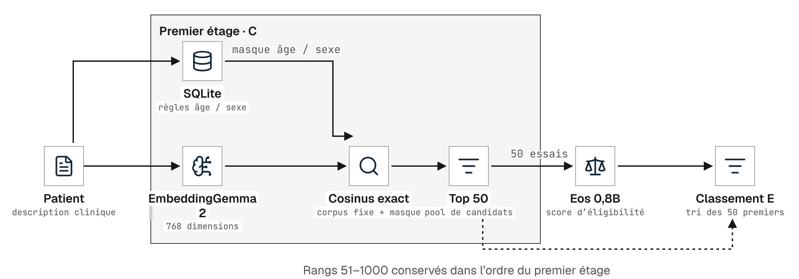

Filtrer.
Retrouver.
Décider.
Comment aider un médecin à retrouver
les essais pertinents pour son patient ?
INDABA · Recherche d’information médicale
Kaseka Mwavingi Tresor · Université Nouveaux Horizons
TREC Clinical Trials · 2021–2022
Un médecin. Un patient.
Des essais à retrouver.
Un patient de 45 ans.
Une insuffisance cardiaque.
« Quels essais dois-je examiner
en priorité pour lui ? »
Exemple fictif pour expliquer la méthode.
Chercher les mêmes mots :
la recherche « lexicale ».
La demande contient :
« insuffisance cardiaque »
On privilégie les fiches contenant
ces mots.
BM25
Une méthode classique de classement par les mots.
Elle tient compte de leur fréquence, de leur rareté dans le corpus et de la longueur du document.
Un autre vocabulaire peut rendre un essai pertinent plus difficile à retrouver.
Chercher une idée proche :
la recherche « sémantique ».
« insuffisance cardiaque »
« décompensation avec dysfonction ventriculaire »
Les mots diffèrent.
Les descriptions peuvent être proches sur le plan clinique.
Un encodeur transforme chaque texte en une liste de nombres
pour mesurer cette proximité.
Pourquoi EmbeddingGemma 2
de Google ?
Son rôle
Encoder la description du patient et les textes des essais pour chercher par le sens.
Notre choix
Des poids téléchargeables, un modèle compact et la possibilité d’une exécution locale.
Notre utilisation
Texte uniquement.
768 nombres par texte.
Aucun entraînement médical ajouté.
Choisir un modèle accessible, puis mesurer sa qualité sur notre tâche.
Une ressemblance de sens
ne garantit pas les bons critères.
Notre patient a 45 ans.
Un essai très proche du sujet
« Participants âgés de 60 ans et plus »
Le filtre retire ce candidat.
SQL est un langage pour interroger des données rangées en tables.
Ici, il compare l’âge et le sexe extraits du texte aux champs de l’essai.
Un contrôle explicite complète la recherche par le sens.
Un modèle de décision répond
à une question fermée.
Entrée : description du patient + fiche de l’essai
« Ce patient satisfait-il les critères indiqués ? »
Sortie : un score associé à la réponse « oui ».
Eos est le modèle de décision que nous testons.
Il produit cette réponse sans rédiger un long texte.
Nous utilisons son score pour réordonner les essais.
Le médecin doit encore vérifier l’admissibilité.
Pourquoi commencer
par un petit modèle ?
Eos · 0,8B
Environ 0,8 milliard de paramètres :
les valeurs apprises par le modèle.
Le nombre de paramètres indique une taille,
pas une garantie de qualité.
Notre objectif
Explorer une solution à poids ouverts avec un budget de calcul limité.
Faire examiner seulement les 50 premiers essais, au lieu de tout le corpus.
La question de recherche : ce compromis conserve-t-il
une qualité de recherche utile ?
Ce que les travaux précédents
nous ont amenés à tester.
Combiner peut aider.
La recherche puis le reclassement ont donné de bons résultats sur les essais cliniques.
Pradeep et al., SIGIR 2022
Ajouter peut aussi nuire.
Dans ce même travail, certaines variantes sans entraînement adapté dégradaient le classement.
Un gain ne se présume pas.
Le terrain change les résultats.
CliniQ montre l’intérêt de comparer recherche par les mots et par le sens sur la tâche visée.
Zhao et al., 2025 · dossiers cliniques
Notre approche : trois rôles,
trois questions différentes.
Filtrer
Âge et sexe compatibles ?
SQL
Retrouver
Description de sens proche ?
EmbeddingGemma 2
Reclasser
Quel candidat examiner d’abord ?
Eos
L’intérêt de l’assemblage : traiter séparément les contraintes,
la proximité de sens et l’examen patient–essai.
Comment circule la demande ?

La recherche sélectionne. Eos examine les 50 premiers.
Les suivants gardent leur ordre.
Huit façons de chercher,
pour comprendre ce qui apporte quoi.
| Nom | Comment chercher ? | Filtre âge / sexe ? | Second examen ? |
|---|
| BM25 | Par les mots | Non | Non |
| A | Par les mots | Oui | Non |
| B | Par le sens | Non | Non |
| C | Par le sens | Oui | Non |
| D | Par le sens | Non | Oui · 50 premiers |
| E | Par le sens | Oui | Oui · 50 premiers |
| D′ / E′ | Comme B / C | Non / Oui | BGE · 50 premiers |
Une comparaison,
une question à la fois.
B contre BM25Le sens apporte-t-il plus que les mots ?
C contre BLe filtre âge / sexe apporte-t-il quelque chose ?
E contre CLe second examen par Eos améliore-t-il le classement ?
Comparer seulement le système complet au plus simple
ne dirait pas quelle brique explique le gain.
TREC : un terrain commun
pour tester les moteurs de recherche.
TREC signifie Text REtrieval Conference.
Sa campagne « Clinical Trials » fournit :
Des demandes
125 descriptions de patients :
75 en 2021, 50 en 2022.
Des documents
375 580 fiches d’essais
issues de ClinicalTrials.gov.
Des jugements
Des évaluations de pertinence pour des couples patient–essai.
Comment sait-on qu’un résultat
est pertinent ?
ÉligibleLe profil satisfait les critères selon le jugement du benchmark.
ExcluLa maladie est pertinente, mais un critère écarte ce profil.
Non pertinentL’essai ne correspond pas au besoin.
Pour précision et rappel, seul « éligible » compte.
Le score nDCG distingue les trois niveaux.
Précision et rappel :
deux questions complémentaires.
Exemple fictif : 6 essais pertinents connus ; on affiche 5 résultats, dont 3 pertinents.
Éligible
Non pertinent
Éligible
Exclu
Éligible
Précision@5 = 3 / 5 = 60 %
Parmi ce que je vois,
quelle part est pertinente ?
Rappel@5 = 3 / 6 = 50 %
Parmi les essais pertinents connus,
quelle part ai-je retrouvée ?
nDCG : les meilleurs essais
arrivent-ils en premier ?
Liste moins bien ordonnée
- Non pertinent
- Exclu
- Éligible
- Éligible
Liste mieux ordonnée
- Éligible
- Éligible
- Exclu
- Non pertinent
Les mêmes documents peuvent donner un meilleur score
si les plus pertinents remontent en haut.
Deux autres façons
de lire une liste de résultats.
MRR : trouver vite le premier
Premier essai pertinent au rang 1 : score 1.
Au rang 4 : score 1 / 4.
On fait ensuite la moyenne sur les requêtes.
R-Precision : adapter la profondeur
Si une requête a 6 essais pertinents connus, on mesure la précision dans les 6 premiers.
Le nombre examiné dépend de la requête.
Ces mesures complètent la précision, le rappel
et la qualité de l’ordre.
Le corrigé est incomplet.
Il faut aussi le montrer.
Tous les essais retrouvés n’ont pas été jugés.
Judged@10
La part des 10 premiers résultats qui ont un jugement disponible.
8 résultats jugés sur 10 → 80 % de couverture du corrigé.
Un essai non jugé n’est pas nécessairement non pertinent.
Cette mesure signale la limite, sans la corriger.
Les résultats mesurés :
le sens dépasse les mots.
Qualité des 10 premiers · nDCG@10
Eos améliore la liste
des 20 essais à examiner.
| Année | Méthode | Précision@20 | Rappel@20 |
|---|
| 2021 | C · Sens + filtre | 23,1 % | 10,5 % |
| 2021 | E · Sens + filtre + Eos | 27,9 % | 12,8 % |
| 2022 | C · Sens + filtre | 27,2 % | 11,2 % |
| 2022 | E · Sens + filtre + Eos | 33,8 % | 14,3 % |
En 2022 : environ 5,4 → 6,8 essais jugés éligibles parmi les 20 premiers, en moyenne.
Précision et rappel à 20 progressent avec Eos,
avec et sans filtre, les deux années.
Une meilleure moyenne
ne suffit pas pour conclure.
Les résultats varient d’un patient décrit à l’autre.
Ce qui est soutenu
Avec Eos : amélioration de la précision et du rappel dans les 20 premiers.
Ce qui reste incertain
Avec Eos : gain de nDCG@10 non concluant après correction des comparaisons multiples.
Conclusion : un signal utile sur certaines mesures,
pas une supériorité générale démontrée.
Où nous situons-nous
par rapport à la recherche ?
| Travail | Ce qu’il rapporte | Comment lire la comparaison |
|---|
| Notre E · 2022 | nDCG@10 = 0,479 | Trois composants, corpus complet |
| Meilleur run TREC · 2022 | nDCG@10 = 0,613 | Autre système : repère, pas essai contrôlé |
| TrialGPT · 2024 | Critères examinés par un grand modèle | Corpus réduit : scores non directement comparables |
Notre apport : mesurer la complémentarité de composants
accessibles, avec leurs limites. Nous ne revendiquons pas le record.
Que se passe-t-il
si la description contient des fautes ?
Nous modifions artificiellement 5 % puis 10 % des mots.
Les essais et les modèles restent identiques.
| nDCG@10 · 2022 | Texte propre | 5 % de bruit | 10 % de bruit |
|---|
| B · sens | 0,411 | 0,393 | 0,384 |
| C · sens + filtre | 0,423 | 0,413 | 0,395 |
Le sens ne rend pas le système insensible aux fautes.
L’extraction des contraintes peut aussi se tromper.
Des ressources locales :
un objectif, puis des mesures.
Ce que nous avons mesuré
Filtrage et évaluations sur portable.
Encodage et Eos sur T4 Colab.
91,8 min
pour 7 340 paires Eos distinctes,
sauvegardes comprises.
Ce qu’il reste à établir
Temps par demande et mémoire
sur une machine locale.
Par exemple : un PC avec RTX 3050.
Compatibilité non démontrée ici.
Un autre modèle permet-il
de faire aussi bien ?
BGE lit lui aussi une paire patient–essai et lui donne un score.
Il remplace Eos sur exactement les mêmes 50 candidats.
| nDCG@10 | 2021 | 2022 |
|---|
| C + Eos | 0,415 | 0,479 |
| C + BGE | 0,393 | 0,420 |
Eos a de meilleures moyennes ; l’écart nDCG reste incertain.
Son rappel au rang 20 dépasse BGE les deux années.
Des mots au sens.
Du sens aux critères.
Des résultats aux preuves.
Aider le médecin à trouver quoi examiner.
Puis lui laisser vérifier pour son patient.
Questions · sources et détails dans les annexes suivantes.
Annexe · Toutes les mesures,
sans confondre leurs questions.
| Mesure | Question | Profondeur évaluée |
|---|
| Précision · P | Quelle part des résultats affichés est pertinente ? | 5, 10, 20 |
| Rappel · R | Quelle part des pertinents jugés est retrouvée ? | 5, 10, 20 |
| nDCG | Les meilleurs résultats sont-ils en haut ? | 10 · trois niveaux |
| MRR | Où arrive le premier pertinent ? | Jusqu’au rang 1 000 |
| R-Precision | Quelle précision à R pertinents connus ? | R propre à chaque requête |
| Judged | Quelle part du début de liste est jugée ? | 10 · couverture du corrigé |
Annexe · Comment sécuriser
les conclusions statistiques ?
Comparer les mêmes requêtes.Tests de Wilcoxon pairés ; intervalles bootstrap à 95 %.
Tenir compte du nombre de tests.Correction de Holm : famille prospective de 99 tests par année.
Évaluer aussi le témoin classique.99 tests observés ; BGE évalué sur les mêmes candidats.